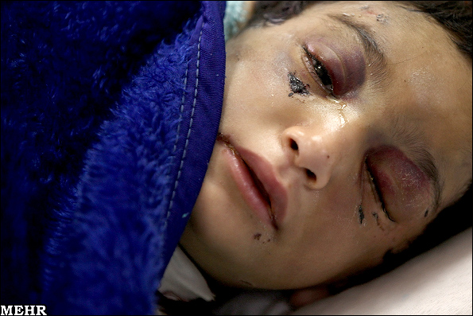
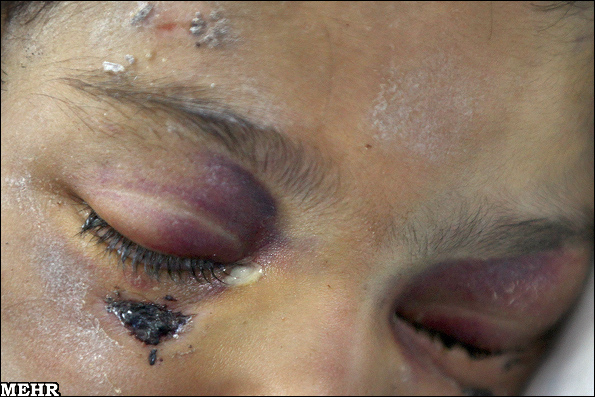
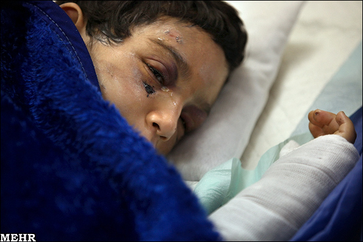
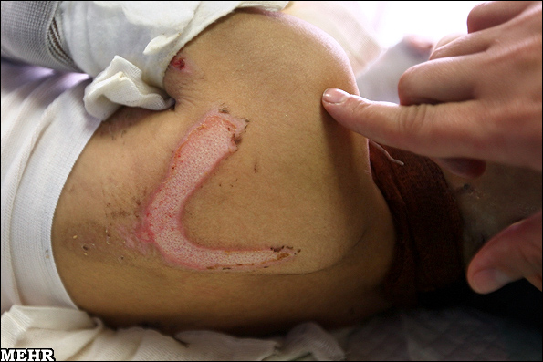
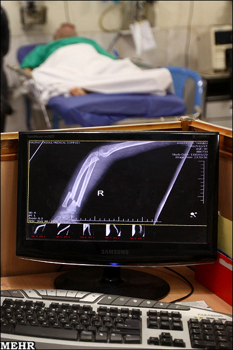

|
|
شکنجه دختر 8 ساله تا حد مرگ/ سوختگی و شکستگی دستها
پنج شنبه1 اردیبهشت 1390
خبرگزاری مهر- دختر 8 ساله ای به فجیع ترین وضع توسط ناپدری مورد آزار و اذیت جسمی قرار گرفته و هم اکنون در بیمارستان بستری است.

دکتر کامران آقاخانی متخصص پزشکی قانونی بیمارستان حضرت رسول (ص) با اعلام این خبر در گفتگو با خبرنگار مهر اظهارداشت: این دختر 8 ساله شب گذشته توسط اورژانس اجتماعی سازمان بهزیستی به بیمارستان سوانح و سوختگی مطهری منتقل می شود.
وی با عنوان این مطلب که مسئول فنی بیمارستان مطهری نیز هستد، افزود: متاسفانه به علت شکستگیهای متعدد از ناحیه دست و سر، ناگزیر شدیم این دختر را به بیمارستان حضرت رسول (ص) اعزام کنیم.

آقاخانی در تشریح وضعیت این دختر 8 ساله گفت: موارد کودک آزاری زیادی را شاهد هستیم اما وضعیت این دختر قابل مقایسه با سایر کودک آزاریها نیست. شدت آزار و شکنجه او به قدری دردناک است که قابل شرح نیست.
این متخصص پزشکی قانونی با اشاره به شکستگی دو ساعد و سر این کودک، افزود: آثار شلاق و سوزاندن سیگار در نقاط مختلف بدن این دختر 8 ساله به وضوح دیده می شود به طوری که جای سالمی در بدن او مشاهده نمی شود.

وی افزود: این دختر به ما گفته است که با مادر معتاد و ناپدری اش زندگی می کند و 4 روز است به او غذا نداده اند.
آقاخانی با تاکید بر انعکاس چنین فجایع دردناک و آزار دهنده ای گفت: از رسانه ها می خواهم که در مقابل این قبیل کودک آزاریها از خود واکنش نشان دهند و مسئولان مربوطه نیز با افراد خاطی به شدت برخورد کنند.

وی با اشاره به شکستگی سر و دو ساعد این دختر 8 ساله، از انجام تصویربرداری و معاینات دقیق برای درمان شکستگیها و سوختگیها خبر داد و افزود: وضعیت به قدری فجیع است که باور آن برای هیچ کس وجود ندارد و نمی توان گفت که فردی که او را آزار داده است، خلق و خوی انسانی دارد.

این دختر ساکن یکی از محلات جنوب تهران است که توسط اورژانس اجتماعی بهزیستی به بیمارستان منتقل شده است.